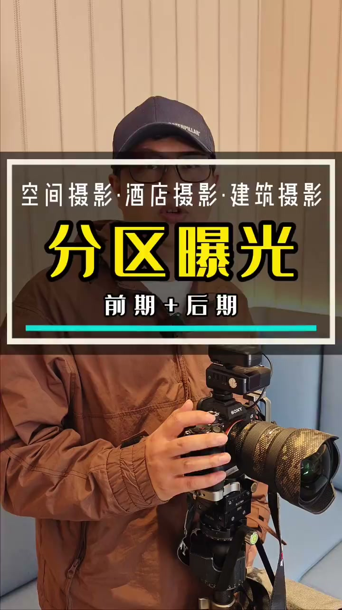
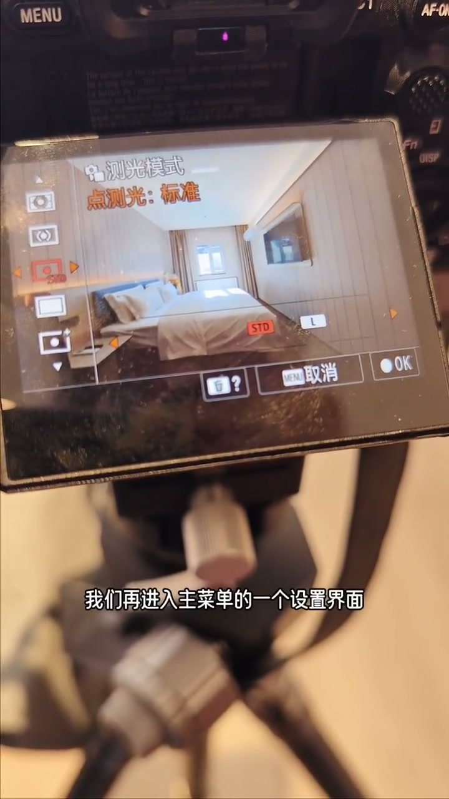
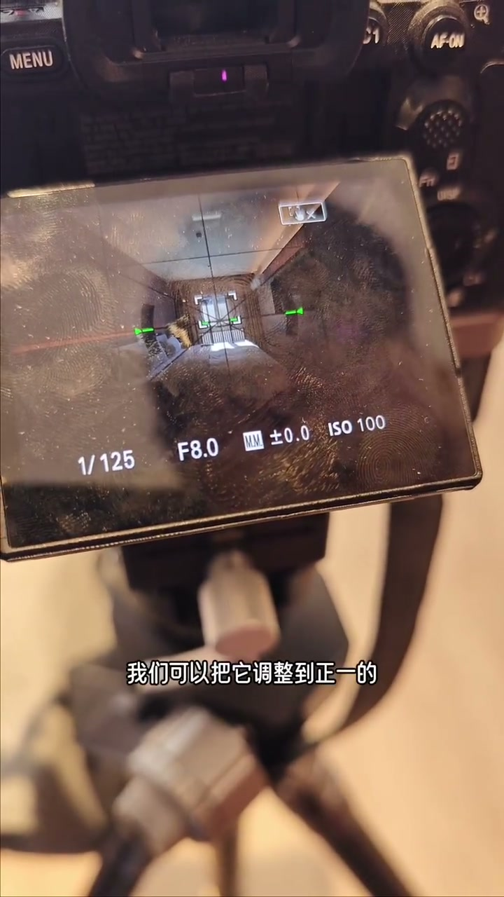
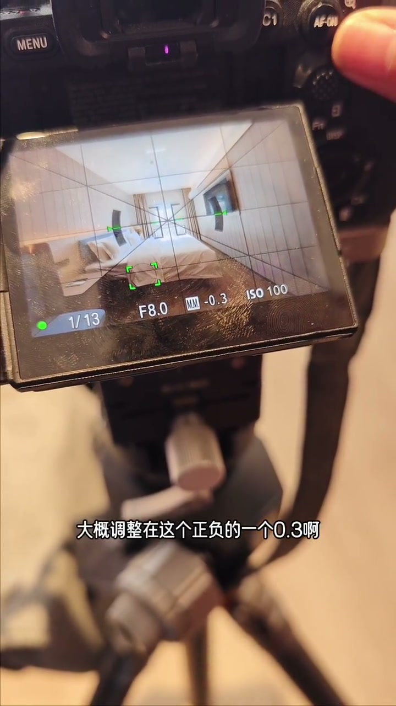
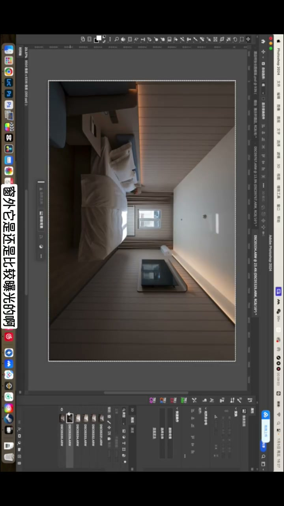
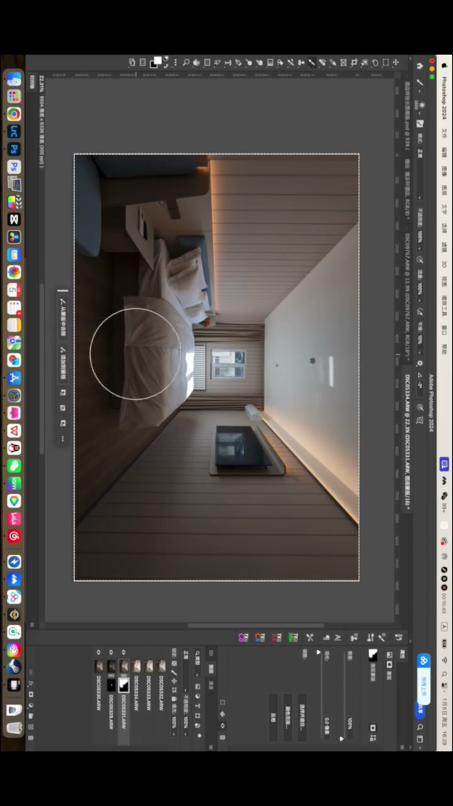
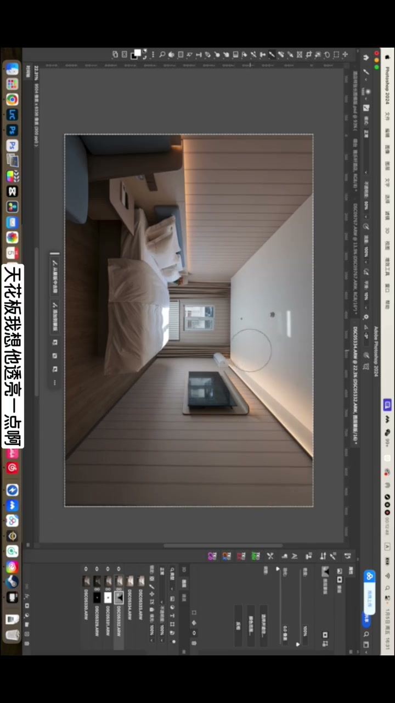
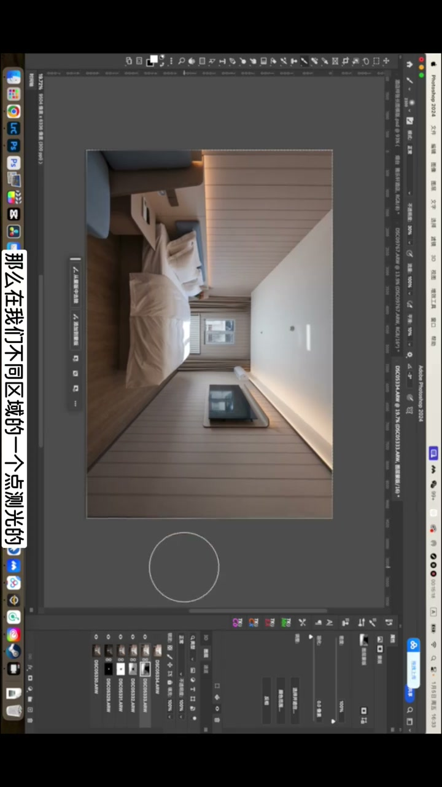

内容要点
[00:00] 最近老师有粉丝问什么叫做分区曝光
[00:02] 今天我们就来给大家演示一下
[00:04] 在拍摄中如何进行分区曝光
[00:06] 然后分区曝光在后期里面又应该如何操作
[00:09] 首先我们来看一下相机的一个设置
[00:12] 我们目前使用的设备是索尼的A7R5
[00:14] 就是它这套系统和M4S3这些都是一样的
[00:18] 我们先来看它的基本设置
[00:19] 我们按FN进入它的设置菜单里面
[00:22] 找到这个测光的这一个边际模块
[00:26] 通常我们使用最多的是多重
[00:28] 多重测光它是根据整个环境的平均亮度
[00:31] 来进行混合性的一个测光的
[00:34] 这样的话在多数情况下是比较准的
[00:36] 但是在大尼光的情况下
[00:38] 可能就是暗部细节不足
[00:39] 高光它还是过暴的
[00:40] 那么这种时候我们就可以采取
[00:43] 分区曝光的形式得到更准确的一个
[00:45] 你想要的各个部位的一个亮度
[00:48] 来进行后期的一个合成
[00:50] 那么这个时候我们选到这个点测光
[00:53] 然后选择它的点测光的大小是标准
[00:55] 这样的话它范围比较小测的就更加的精准
[00:58] 我们选择好了这个点测光以后
[01:01] 我们再进入主菜单的一个设置界面里面去找到
[01:05] 找到测光
[01:06] 找到测光里面的这个点测光
[01:09] 我们把它更改为对焦点联动
[01:11] 这样的话
[01:12] 我们只要点到哪里对焦
[01:14] 它显示的就是这个区域的一个测光
[01:17] 比如说现在我点到窗户这里
[01:18] 它显示的大家可以看到是正二的一个曝光
[01:22] 我选择电视这里
[01:23] 它显示的是-1的曝光
[01:25] 我选择这个细节不足的地方
[01:26] 它显示的也是-1
[01:28] 我选择这个-100和床交界这里
[01:30] 它显示的就是富二严重的曝光不足
[01:32] 这样我们就能准确的知道哪个区域
[01:34] 我们该是一个怎样的曝光
[01:36] 然后我们就可以开始拍了
[01:37] 以这张照片为例
[01:38] 我们首先来测试它窗户的这里
[01:41] 因为天气比较新的
[01:42] 它是过曝的
[01:43] 外面是看不到细节的
[01:44] 但是我们也不能让它测光是零
[01:46] 如果测光是零的话
[01:48] 它就不符合这个房间真实的一个光笔了
[01:51] 我们可以把它调整到正一的一个情况下
[01:54] 它是既有细节又不过曝
[01:55] 但是也不是很实
[01:58] 中间调片灰的那种感觉
[01:59] 像窗外的话
[02:00] 白加黑减
[02:01] 它本身是一个高量的区域
[02:03] 我们就让它是正一
[02:04] 然后就是直接排张
[02:07] 好 这个时候我们测试到这个床
[02:09] 这个床的这里
[02:11] 床的这里根据白加黑减的话
[02:12] 这床是白色的
[02:13] 它的曝光相应也应该提高一点
[02:16] 我们把它提到正的一个1.3
[02:18] 来对床这一块进行分区的一个曝光
[02:21] 然后再点到墙面的中间调这种地方
[02:23] 我们希望它细节多一点
[02:25] 那我们也点到它一个正的一个0.3
[02:30] OK 好
[02:31] 然后就是打到它相对的一个暗部的地方
[02:33] 它现在显示的是附一
[02:34] 我们希望它细节多一点
[02:35] 我们把它的曝光
[02:37] 大概调整在正负的一个0.3
[02:40] 然后单独又曝一下
[02:41] 最后是这个椅子的这里
[02:43] 椅子这里偏暗
[02:44] 我们也把它曝到一个负的0.3的一个状态
[02:47] 好 最后是比较暗的地板的这里
[02:49] 我们也把它曝到一个负的0.3的一个状态
[02:52] 好 这样的话
[02:53] 根据我们刚才拍的这几张图片
[02:55] 我们对不同的区域都分别进行的曝光
[02:58] 因为今天的这个案例
[02:59] 我们使用的是一个自动的镜头124
[03:01] 但如果你使用的是像老挖这些的手动镜头的话
[03:04] 它就无法在屏幕上产生这个对焦点
[03:06] 让你自由的去点屏幕 去进行测光
[03:08] 那么这种时候就可以根据你的经验
[03:11] 用眼睛去看你各个区域想要的一个亮度
[03:13] 只要调试快门杯的参数
[03:15] 把各区域的亮度调试到你想要的那个观感就可以了
[03:18] 好的 图片现在已经倒进了PS
[03:19] 我们图片倒进来以后
[03:21] 我们先对图片进行一个自动对齐
[03:23] 对齐完了以后
[03:24] 我们可以用中间调曝光是0的这一张
[03:27] 把它进行打底
[03:28] 然后这个时候窗外
[03:30] 它还是比较曝光的
[03:32] 是破包的
[03:32] 那么我们再用窗外点测光曝光补偿
[03:34] 是0的这一张
[03:35] 我们可以首先把它窗外的一个曝光
[03:37] 给它选出来
[03:42] 我们使用钢笔工具
[03:43] 来对窗外的曝光的区域来做一个选区
[03:46] 然后给它添加一个浓板
[03:49] 好的 它就不会像刚才
[03:50] 那么过曝了
[03:51] 为了让它浓和度更差一点
[03:52] 我们可以把透明度降到70
[03:54] 让它还是有一点点微微过曝的感觉
[03:56] 它才符合现场的光笔的氛围
[04:04] 之后我们可以选择
[04:06] 就是房间的以床为中间的区域
[04:08] 我们进行点测光
[04:09] 它曝光补偿是真的免稀的
[04:10] 这一张我们来把室内给它添调一点
[04:13] 直接给它盖上一个黑色的一个文板
[04:14] 然后使用白色的话
[04:16] 来对它进行涂抹
[04:17] 只要不要涂到窗口那个位置就行了
[04:21] 还有床上阳光上已经来的这一坨高光
[04:24] 我们也注意不要涂到它就可以了
[04:26] 这样的话可以避免它过曝
[04:32] OK 这样的话整体这张图片就比刚才要干净了很多了
[04:35] 那么这个时候我们需要做的就是
[04:37] 暗部的细节还不足
[04:38] 我们就要来找这个
[04:40] 我们单独对它暗部进行一个曝光补偿
[04:42] 是负的以免稀的一个图片
[04:44] 来进行它暗部区域的一个文板测试
[04:46] 也是给它添加一个暗部的细节
[04:48] 然后这个时候注意它如果直接去擦的话
[04:50] 它的反差可能会很大
[04:51] 这时候我们把透明度稍微降低一点
[04:53] 我们降到50%
[04:54] 我们一层一层的去擦拭
[04:55] 首先我们来看比较暗的就是
[04:56] 它床有阴影的地方了
[04:58] 我们就对这些地方进行一个擦拭
[05:00] 还有地面上背光的这些区域
[05:02] 我们也可以把它的曝光给它提起来
[05:06] 然后这个墙面我们想让它明亮一点
[05:08] 可以再给它刷上一层
[05:13] 这个墙面有阴影的地方了
[05:14] 我们也带它提一下
[05:16] 这个墙面有阴影的地方了
[05:17] 我们也带它提一下
[05:21] 天花板我想它透亮一点
[05:23] 把天花板再刷亮一些
[05:27] 这个灯带就不用去刷它了
[05:28] 再刷这个灯带会过爆的
[05:30] 好我们透明度是50%
[05:32] 我们还可以再把暗部再刷一下
[05:37] 就这样一个层次一个层次的来进行处理
[05:42] 大家可以看一下前后的一个区别
[05:43] 这个照片又逐渐干净了一个层次
[05:45] 我们再来看我们剩下的一个素材
[05:47] 主要针对的都是对最暗的地方进行一个
[05:49] 曝光补偿是零的一个曝光
[05:51] 来把它的暗部的细节给它打死清楚
[05:53] 但是为了符合真实的一个调情
[05:54] 我们不一定是100%把它暗部刷得这么亮
[05:57] 那么我们再用暗部曝光的图片
[05:59] 来进行一个黑色的浓板的一个遮蓋
[06:01] 然后我们再把透明度调小一点
[06:03] 调到一个30 m30的一个透明度
[06:05] 我们再对它的暗部的区域
[06:07] 我们再对它进行一个曝光上的一个提亮
[06:14] 好的 这样的话
[06:16] 这个照片它又干净了一个层次
[06:18] 虽然是一个强一光的状态
[06:20] 那么在我们不同区域的一个点侧光的一个
[06:23] 嗯 点侧光的一个单独曝光
[06:25] 去曝我们想要的一个亮度的
[06:26] 那么一个情况
[06:27] 再通过浓板的踏实的话
[06:29] 就可以把照片合成出一个比较透亮的一个感觉
[06:31] 我们刷完以后
[06:32] 我们还要就是一个简单的操作
[06:34] 就是它的高光可能白色接不足
[06:36] 我们把它的白色接给它整体接一接
[06:38] 让它看上去更透亮一些
[06:40] 然后再给它拉一个曲线
[06:43] 来增加一下它的一个对比度吧
[06:51] 之后我们还可以用亮度模板
[06:53] 选中它的较暗的区域
[06:55] 给它较暗的区域
[06:56] 再给它补一些高光上去
[07:03] 好 这样的话
[07:04] 它整体的通路的感觉就已经出来了
[07:06] 剩下的我们只需要调整一下
[07:07] 图片的和拼数值
[07:08] 去修改一下颜色
[07:09] 把一些脏的颜色给它去掉
[07:11] 用白一点
[07:12] 然后再把床的皱纹给它修饰一下
[07:14] 再给电池机来个电影画面
[07:15] 这张图就OK了







